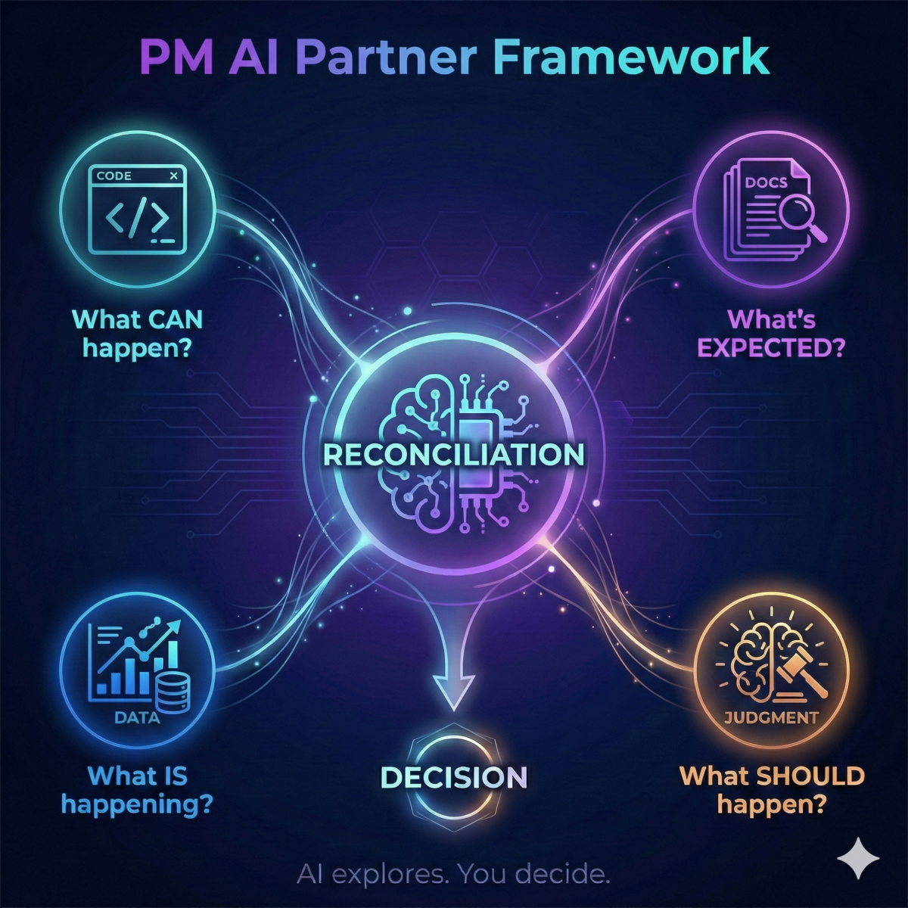
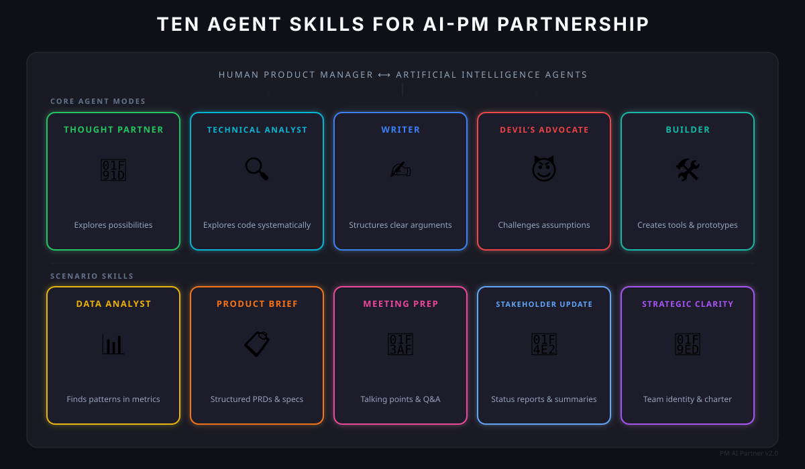

AI-powered skills, workflows, and methodology for Product Managers. One command to install.
Works with Claude Code, Cursor, and Codex · MIT Licensed

Platform PMs face a unique challenge: the truth lives in code, but strategy lives in docs.
Read docs → Form opinions → Write more docs → Hope you didn't miss something → Iterate slowly → Context lives in people's heads
PM work is about reconciling different sources — AI helps explore, humans decide.
APIs, contracts, implementations, patterns
Strategy, RFCs, handovers, context
Metrics, analytics, A/B tests, research
Intuition, values, experience, priorities
One command installs 10 skills, 4 commands, and 3 hooks into your editor.
Multi-step workflows for recurring PM tasks — not single prompts.
| Command | What It Does |
|---|---|
/pm:plan-week | Reviews context, sets priorities, flags risks |
/pm:write-brief | Guided PRD creation with quality checklist |
/pm:prep-meeting | Talking points, anticipated questions, role-play |
/pm:audit-codebase | PM-focused code exploration — capabilities, gaps, implications |
Run in the background — no manual invocation needed.
| Hook | Trigger | What It Does |
|---|---|---|
| Quality Gate | Write to product-catalog/ | Checks doc against quality bar (evidence, clarity, audience) |
| Draft Status | Write to sandbox/ | Reminds to add status markers to drafts |
| Commit Reminder | git commit | Prompts to capture lessons in CLAUDE.md |
Different Claude "modes" for different jobs — invoke by name or let them auto-activate.

Brainstorm, explore options, surface assumptions
Translate code and systems into PM-friendly insights
Draft briefs, updates, emails — concise and structured
Stress-test proposals, anticipate objections
Create tools, scripts, dashboards, prototypes
Write queries, analyze metrics, extract insights
Structured PRDs and feature specs
Talking points, anticipated questions
Status reports and executive summaries
Define team identity, boundaries, and charter
Repeatable processes for common PM tasks.
Define charter, value proposition, and improvement hypotheses
Map capabilities, find ownership, understand contracts
Understand systems, propose changes, evaluate tradeoffs
Create PRDs, briefs, stakeholder docs with iteration
Create scripts, dashboards, HTML artifacts
Structure agendas, anticipate questions, draft talking points
Question → SQL query → analyze results → connect to strategy
Diagnose confusion, separate concerns, add structure, sync references
What makes this framework work.
AI explores and proposes; humans decide and prioritize. Never delegate decisions that require context or values.
Persistent documents compound value. Every conversation should produce or update an artifact.
Well-organized workspace context makes AI 10x more useful. Invest in structure upfront.
Telling AI what role to play produces better output than generic requests.
Your repo is persistent; chat disappears. Commit after each AI session. Diffs show what changed; branches let you experiment.
Before sharing AI-assisted work, look at what actually changed. The diff is your ownership tool.
Install the plugin or fork the full framework.
For the full methodology with workspace architecture, templates, and case studies.
Skills install as a Claude Code plugin with manifest, commands, and hooks.
Skills install to ~/.cursor/skills/ with slash command support.
Skills install to ~/.codex/skills/ for OpenAI's CLI agent.
Extend with BigQuery, Google Drive, Code Search, and more.
Documentation and related materials.
15-slide deck — agent modes, workflows, real examples
Case study — 220K-star repo analyzed with the framework